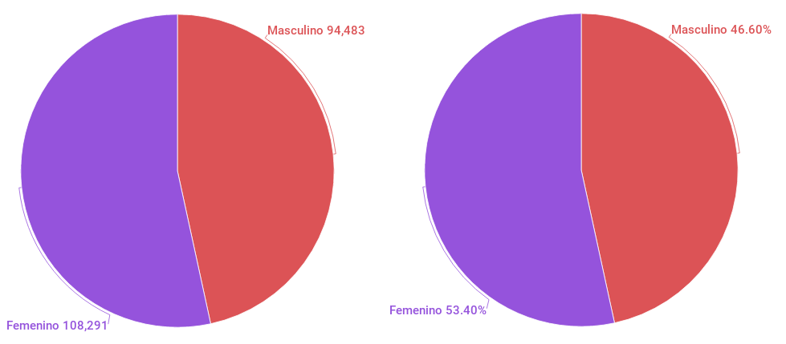
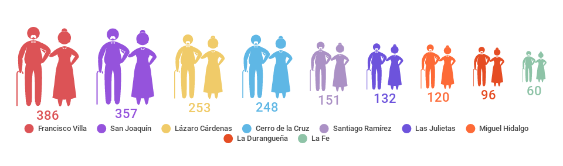

La necesidad de atender con eficacia el universo de adultos mayores en el país representa uno de los grandes retos para los tres órdenes de gobierno, pues la situación es ya impostergable debido al crecimiento de este segmento de la población.
No se desestima el trabajo realizado en Coahuila y específicamente en Torreón, sin embargo la realidad demuestra una y otra vez que ha sido insuficiente. A pocas semanas de celebrar el Mes del Adulto Mayor, es pertinente elaborar un diagnóstico sobre el estado social, como la derechohabiencia y marginalidad de este grupo etario.
Según las estimaciones de CONAPO (Consejo Nacional de Población) para 2020 en Torreón habitarán 57,846 adultos mayores y para la Zona Metropolitana (Torreón Matamoros, Gómez Palacio y Lerdo) sumarán 104,688. De acuerdo a la información de la Secretaria de Salud del Estado de Coahuila en 2016 se contabilizaron 202,774 adultos mayores de 65 años.
Si en este contexto se analiza una variable tan importante para todas las personas pero sobre todo para los adultos mayores como es la derechoabiencia, la situación puede ser alarmante sobre todo para el futuro inmediato.
De acuerdo con la Jurisdicción Sanitaria n° 6 que integra a los municipios de Torreón, Matamoros y Viesca el número de adultos mayores mujeres en esta situación es de 4,809 y 3,764 hombres con un total de 8,573.
En el caso específico de la ciudad de Torreón, los datos precisan la existencia de 6,829 adultos mayores sin derechohabiencia. Esto en sí mismo ya es un problema, sin embargo lo más importante sería conocer los motivos por los que no cuentan con este servicio y sobre todo, qué hacen cuando necesitan atención médica, a quién recurren o si cuentan con los recursos suficientes para acudir a instituciones privadas o de beneficencia.
En las colonias de torreón
Un elemento más que podría sumarse al análisis es el número de los que viven en colonias catalogadas como de bajos recursos y que están integradas en los polígonos de pobreza en Torreón.
De acuerdo con la información que proporciona los Indicadores Básicos Por Colonia (IBC) elaborado por el IMPLAN Torreón, se desprende que por lo menos en 41 colonias que se podrían catalogar como de escasos recursos, se concentran aproximadamente 9,988 adultos de 65 años y más; colonias como Eduardo Guerra, Vicente Guerrero, Carolinas, Magdalenas, Nueva Aurora, Moctezuma, Tierra y Libertad, Abastos, Aviación, Moderna, Braulio Fernández, Lázaro Cárdenas, Cerro de la Cruz, Antigua Aceitera se cuentan entre éstas.
Bajo esta óptica no sería muy difícil imaginar la situación que pueden estar viviendo estas personas, sin embargo es necesario el diagnóstico para determinar con mayor precisión alguna hipótesis.
El hecho se puede tornar más complejo si se agrega un elemento que pudiera agravar la situación de algunos adultos mayores, por ejemplo: ser parte de una colonia en donde se vive pobreza y violencia al mismo tiempo, este es el caso de colonias como Francisco Villa, Santiago Ramírez, Las Julietas, Lázaro Cárdenas, Miguel Hidalgo, Cerro de la Cruz, La Durangueña, San Joaquín y La Fe, en las que habitan 1,803 adultos mayores.
Estas colonias están incluidas tanto en los polígonos de pobreza como de violencia por parte de ONU Hábitat y La Dirección de Prevención Social del Delito de Coahuila respectivamente.
Se pueden agregar más elementos de análisis, los anteriores sólo son un botón de muestra, pero la autoridad debe saber que el compromiso es enorme pero la responsabilidad histórica de atenderlo lo es aún más.
Adultos de 65 años y más en Coahuila

Fuente: Secretaría de Salud en Coahuila.
Situación de derechohabiencia en Torreón
| Edad quinquenal | Población masculina con derechohabiencia | Población masculina sin derechohabiencia | Total | Población femenina con derechohabiencia | Población femenina sin derechohabiencia | Total | Total General |
|---|---|---|---|---|---|---|---|
| 65-69 | 7,330 | 1,043 | 8,373 | 8,578 | 1,000 | 9,578 | 17,951 |
| 70-74 | 4,991 | 660 | 5,651 | 5,965 | 924 | 6,889 | 12,540 |
| 75-79 | 3,161 | 506 | 3,667 | 4,152 | 746 | 4,898 | 8,565 |
| 80-84 | 1,888 | 319 | 2,207 | 2,673 | 539 | 3,212 | 5,419 |
| 85 y más | 1,337 | 359 | 1,696 | 2,116 | 733 | 2,849 | 4,545 |
| TOTAL | 18,707 | 2,887 | 21,594 | 23,484 | 3,942 | 27,426 | 49,020 |
FUENTE: Secretaría de Salud del Estado de Coahuila; Estadísticas de Salud. Población y Cobertura.
Adultos de 65 años y más en colonias incluidas en polígonos de pobreza y violencia

Fuentes
- Secretaría de Salud del Estado de Coahuila
- Consejo Nacional de Población (CONAPO) Proyecciones de Población
- IMPLAN Torreón Indicadores Básicos de Colonia
- Polígonos del Programa de Prevención del Delito (PRONAPRED) 2015 Delimitados por la SEGOB
- IMPLAN Torreón Polígonos de Pobreza
Este análisis fue publicado en Milenio Laguna
Milenio - Situación social de los adultos mayores en La Laguna